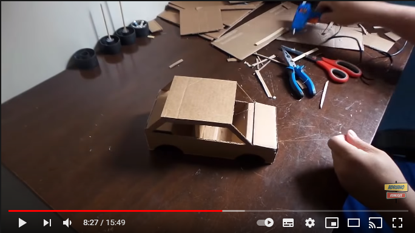

Descreva sua Ideia
Carrinho de Papelão
Carrinho simples e fácil de fazer! Confira o seguinte passo a passo:
-
1. Pegue um papelão e corte em formatos de rodas;
2. Faça 4 rodas;
3. Pegue uma caixa de sapato;
4. Cole as rodas na caixa;
5. Finalize decorando como quiser.
- Fotos
- Vídeos
